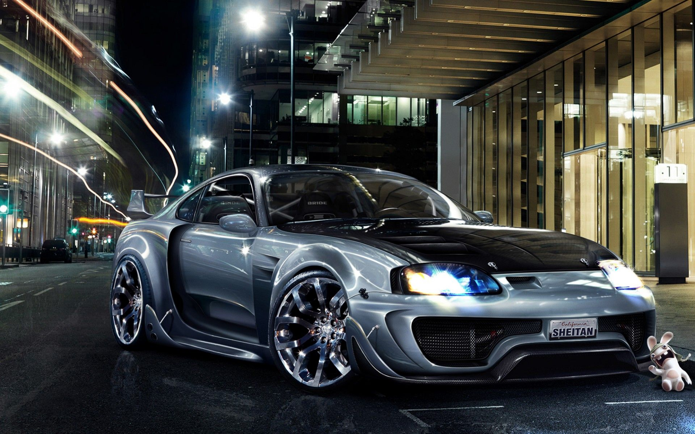

TOYOTA Supra

The Toyota Supra (Japanese: トヨタ・スープラ, Hepburn: Toyota Sūpura) is a sports car and grand tourer manufactured and developed by the Toyota Motor Corporation beginning in 1978. The name "supra" is a definition from the Latin prefix, meaning "above", "to surpass" or "go beyond". The initial four generations of the Supra were produced from 1978 to 2002. The fifth generation has been produced since March 2019 and later went on sale in May 2019. The styling of the original Supra was derived from the Toyota Celica, but it was longer. Starting in mid-1986, the A70 Supra became a separate model from the Celica. In turn, Toyota also stopped using the prefix Celica and named the car Supra. Owing to the similarity and past of the Celica's name, it is frequently mistaken for the Supra, and vice versa. The first, second and third generations of the Supra were assembled at the Tahara plant in Tahara, Aichi, while the fourth generation was assembled at the Motomachi plant in Toyota City. The 5th generation of the Supra is assembled alongside the G29 BMW Z4 in Graz, Austria by Magna Steyr. The Supra traces much of its roots back to the 2000GT owing to an inline-6 layout. The first three generations were offered with a direct descendant to the Crown's and 2000GT's M engine. Interior aspects were also similar, as was the chassis code "A". Along with this name, Toyota also included its own logo for the Supra. It was derived from the original Celica logo, being blue instead of orange. This logo was used until January 1986, when the A70 Supra was introduced. The new logo was similar in size, with orange writing on a red background, but without the dragon design. That logo, in turn, was on Supras until 1991 when Toyota switched to its current oval company logo. The dragon logo was a Celica logo regardless of what colour it was. It appeared on the first two generations of the Supra because they were officially Toyota Celicas. The dragon logo was used for the Celica line until it was also discontinued.citation need In 1998, Toyota ceased sales of the fourth-generation Supra in the United States. Production of the fourth-generation Supra for worldwide markets ended in 2002. In January 2019, the fifth-generation Supra, which was co-developed with the G29 BMW Z4, was introduced.
First generation (A40/A50; 1978)

The first generation of the Supra was based largely upon the Toyota Celica liftback, but was
longer by 129.5
mm (5.10 in). The doors and rear section were shared with the Celica but the front panels were elongated to
accommodate the Inline-6 instead of the Celica's 4-cylinder engine. Toyota created the Celica Supra after
receiving requests from North American dealerships to offer a competitor to the very popular Datsun 280Z.
The Celica XX (in Japanese) served as the basis of the Toyota CAL-1 which was introduced at the 1977 Tokyo
Motor Show and the Celica XX was introduced later in 1978. The Celica XX followed a new product offering
Toyota had introduced, offering personal luxury cars at their existing dealerships. The Celica XX was the
top-level product alongside the Celica at Japanese dealership sales channels called Toyota Corolla Store.
The Celica XX offered the same comforts of the Chaser hardtop coupe, Mark II hardtop coupe, and the Crown
hardtop coupe.
Celica XX
The Celica XX (pronounced "double X") is the Japanese market name of the first generation Celica Supra. It was available with two straight-six engines and five trim packages, beginning with the 2600G, 2600S, 2000G, 2000S and the entry-level 2000L. Six exterior body colours were offered, while cloth upholstery patterns were specific to the trim package in burgundy, brown or dark blue. Leather was offered in brown and only on the "G" trim package. Aluminium alloy wheels were only offered on the "G" trim package. Power windows with driver-side express down, cruise control, power steering, AM/FM Stereo with a separate cassette player, and rear split folding seats were all standard. A parking brake handle was now located in the centre console. Wipers were two-speed with an intermittent wipe and a rear wiper with electric defrost was included.citation need
1978
The Supra was offered with a 125 PS (92 kW; 123 hp) 2.0 L 12-valve SOHC inline-six engine (M-EU, chassis
code MA45) or the 82 kW (110 hp; 111 PS) 2.6-litre 12-valve SOHC inline-six engine (4M-E, chassis code
MA46). The Japanese model was also available with the smaller 2.0 L engine, so buyers choose which yearly
tax they were willing to pay according to vehicle size and engine displacement regulations. Both engines
were equipped with electronic fuel injection. The installation of the larger engine did obligate
Japanese buyers to pay a higher annual road tax, making owning the car more expensive than the smaller
 The Supra was first exported outside Japan in January 1979. The federalized model was originally
equipped with a 110 hp (82 kW; 112 PS) 2.6-litre 12-valve SOHC inline-6 engine.
The Supra was first exported outside Japan in January 1979. The federalized model was originally
equipped with a 110 hp (82 kW; 112 PS) 2.6-litre 12-valve SOHC inline-6 engine.
Transmission options for the model were either a 5-speed manual (W50) or an optional 4-speed automatic
transmission (A40D). Both transmissions featured an overdrive gear. The top gear in the 5-speed was its
overdrive gear whereas the automatic transmission featured an overdrive gear that would engage at speeds
over 56 km/h (35 mph). The drivetrain for the Supra retained the T series solid rear axle configuration of
the Celica in the Japanese MA45 version and a larger F series (and optional Limited Slip Differential) in
the MA46 and MA47. The car also came standard with 4-wheel disc brakes and featured a four-link rear
suspension with coil springs, lateral track bar, and stabilizer bar. The front suspension consisted of
MacPherson struts and a stabilizer bar.
The interior of the Supra had optional power windows and power locks as part of the convenience package. The
convenience package also included cruise control and special door trim with door pull straps with an
optional sunroof. As for standard features, in the centre console there was an extendable map light and a
flip-top armrest, which provided storage. Some other features were the tilt steering wheel, deep zippered
pockets on the backs of the front seats, and a tonneau cover under the liftback. The dashboard also
contained a state of the art AM/FM/MPX 4-speaker stereo radio, analog clock, and tachometer as part of the
instrument panel.
Celica.
1980
In August 1980 (for the 1981 model year), the Supra received an upgrade in displacement with the 2.8-litre 5M-E engine shared with the Crown (S110). It was still a 12-valve SOHC engine, but had a power output of 116 hp (87 kW; 118 PS) and 145 lb⋅ft (197 N⋅m) of torque. The car's automatic transmission was changed to the revised Toyota A43D and it gained a revised final drive gearing. Because of the change in engine and transmission a new chassis code of MA47 was given to the 1981 model. Performance figures for this model include a 0–60 mph (97 km/h) acceleration time of 10.24 seconds and a 1/4-mile time of 17.5 seconds at a speed of 77.7 mph (125 km/h). Also in 1980 (for the 1981 model year), a new Sports Performance Package became an option, which included sport suspension, raised white letter tyres, and front and rear spoilers. This also marked the last year that an 8-track tape player was offered in any Supra.
Second generation (A60; 1981)

In mid-1981, Toyota completely redesigned the Celica Supra as well as the entire Celica lineup for the 1982 model year. In Japan, the Celica XX name continued, and the Celica Supra name continued internationally. Still based on the Celica platform, there were several key differences, most notably the design of the front end and fully retractable pop-up headlights. Other differences were the inline-six rather than four-cylinder engine, as well as an increase in length and wheelbase to accommodate the larger engine. In the home market, cars fitted with the 5M engine were slightly wider, while the 2-litre models remained compliant with the Japanese width regulations, staying under 1,700 mm (66.9 in). The front suspension used Macpherson struts while the rear used a semi-trailing link design with an attachment at the rear differential. The Celica XX introduced the world's first navigation computer. In Feb. 1981, Japanese buyers were offered an alternative to the Celica XX liftback bodystyle, called the Soarer coupé, which was now offered at two Japanese Toyota dealership networks called Toyota Store, and Toyopet Store, as the Celica XX was sold at the Toyota Corolla Store. The four-door performance saloon called the Celica Camry was realigned with the Japanese market Carina, and the Chaser performance sedan shared the Celica XX straight six, while in North America the Cressida took on that role.
L-type and P-type
In the North American market, the Celica Supra was available in two distinct models. There was the "Performance Type" (P-type) and the "Luxury Type" (L-type). While being mechanically identical, they were differentiated by the available options; tyre size, wheel size, and body trim. The P-type had fibreglass fender flares over the wheel wells, while the L-type did not. The P-type was also standard with the more sporty eight-way adjustable seats. The P-type did not get the option of a leather interior until 1983. Initially, the Luxury type meant Automatic transmission, and Performance Type stood for Manual. All editions of the P-type had the same 14x7-inch aluminium alloy wheels and throughout the years the L-type had 14x5.5-inch wheels until 1985 when they were changed to a P-type styled 15x6. The L-type also had the option of a digital instrument cluster with a trip computer; some Canadian models (both L-types and P-types) had this option as well as a few rare instances of American models. The L-type cluster was easily distinguished from the P-type cluster, by the 'ECT' function written on the dial plate. The digital cluster featured a digital tachometer, digital speedometer, and electronic fuel level and coolant level gauges. The trip computer could calculate and display various things such as fuel economy in miles-per-gallon, estimated time of arrival (ETA), and distance remaining to destination. Supras with trip computers also came with cruise control. Excluding the 1982 model, all P-types were available with headlight washers as an option, but the L-types were never given such an option. Although gear ratios changed throughout the years, all P-types came standard with a limited-slip differential.
1981

In 1981, for the 1982 model year, in the North American market, the Celica Supra's engine was the 2.8-litre 12-valve (two valves per cylinder) DOHC 5M-GE. Power output was 145 hp (108 kW; 147 PS) SAE net and 155 lb⋅ft (210 N⋅m) of torque. The engine used an 8.8:1 compression ratio to achieve the power and featured a vacuum advanced distributor. When the car debuted, it had a drag coefficient of Cd=0.348, a 0–60 mph (0–97 km/h) acceleration time of 9.8 seconds and a 1⁄4 mile (400 m) time of 17.2-seconds at 80 mph (129 km/h). The standard transmission for this year was the W58 5-speed manual with the A43DL 4-speed automatic transmission being an option for L-types. Both transmissions featured an overdrive gear and the automatic featured a locking torque converter. The top gear in the 5-speed was its overdrive whereas the automatic transmission featured an overdrive gear that would engage at speeds over 56 km/h (35 mph). The 1982 model's rear differential featured a 3.72:1 ratio. The Celica Supra's four-wheel independent suspension was specially tuned and designed by Lotus and featured variable assisted power rack-and-pinion steering and MacPherson struts up front. At the rear, it had semi-trailing arm suspension with coil springs and a stabilizer bar. Braking on the Celica Supra was handled by four-wheel disc brakes. On the interior, this generation had standard power windows, power door locks, and power mirrors as well as a tilt steering wheel. The power door lock was located in the centre console next to the power mirror control. The analog dash of this model only showed a top speed of 88 mph (142 km/h) in North America. The optional automatic climate control was renovated and was now seen as a standard feature on the A60. Cruise control and a retractable map light was standard in this generation. Some options included the addition of a sunroof, two-tone paint schemes, and a five-speaker AM/FM/MPX tuner with a cassette player (Fujitsu Ten Limited). The optional cassette stereo had a 105-watt power amplifier and a seven-band graphic equalizer. The standard stereo was a five-channel AM/FM/MPX tuner. Leather interior was an option on the L-type model, but the P-type models limited to standard striped cloth interior. The AM/FM antenna was integrated into the front windshield rather than a typical external mast antenna. There was a key lock on the gas tank door (in lieu of a remote release) and the hatch and rear bumper were black regardless of exterior colour on the rest of the car. The P-type was available with an optional rear window visor above the hatch glass. The tail lights had a reverse light in the centre and the door handles opened the doors by pulling sideways. The front nose badge and B-pillar only read "Supra" for the first several months of production, but were changed to read "Celica Supra" midway through the model year. The L-type had front and rear mudflaps but P-type of this year did not.
1982
In 1982, for the 1983 model year, there were not many changes but there was an increase in power output to 150 hp (112 kW; 152 PS) and 159 lb⋅ft (216 N⋅m) of torque from the same 5M-GE engine. The only real change in the engine area was the switch from a vacuum advanced to an electronic advanced distributor, yet that did not increase the power output. Toyota switched to a 4.10:1 rear gear ratio for the P-type and a 3.73:1 for the L-type. As for the optional automatic transmission, they replaced the A43DL 4-speed with a newly designed A43DE 4-speed. It had an electronic controller that would adjust its shift pattern for a balance between performance and economy. It was the first in the industry to provide an electronically controlled transmission (ECT). This allowed the driver to choose either the "power" driving mode or "normal" driving mode at the touch of the button. The power mode provided the quickest acceleration and the normal mode provided the best all-around performance. The interior virtually had no changes, but changes to the exterior included a switch to a power mast antenna, mudflaps on all models, and the addition of headlight washers on the P-type. All B-pillar and nose badges for cars sold in North America read "Celica Supra" and only the P-type was available in two-tone colour schemes.
1983

In 1983, for the 1984 model year, the changes were significant. Power output was increased on the 5-speed models to 160 hp (119 kW; 162 PS) and 163 lb⋅ft (221 N⋅m) of torque. The increase was achieved by a mixture of a redesigned intake manifold with D-shaped intake runners and an increase in compression ratio to: 9.2:1. Another notable change in the 5-speed models was the switch to a 4.30:1 gear ratio in the rear differential. All automatic models retained the previous years power statistics, but the rear gear ratio was changed to 4.10:1. The most notable exterior changes included the switch to wraparound front turn signals, the option of either a rear wing spoiler mounted high up on the rear hatch, or rear window and quarter window louvers. Also, the tail-lights were redesigned and the hatch received a billboard "Supra" sticker instead of the smaller sticker, which was previously positioned on the right. The rear hatch and bumper was changed and received the same colour as the rest of the car (instead of the black of previous years). The door handles were also switched, opening by pulling up instead of sideways. Two-tone paint schemes also became available on both the P-type and L-type models. Some interior controls such as the steering wheel, cruise control, and door lock switch were redesigned. Toyota included a 130 mph (209 km/h) speedometer in North American models instead of the traditional 85 mph (140 km/h) speedometer and the automatic climate control display was also changed. The previous year's cassette and equalizer stereo option was now made a standard feature
1985–1986

The Supra was redesigned again in 1985. Power output was marginally increased to 161 hp (120 kW; 163 PS) and torque was up to 169 lb⋅ft (229 N⋅m). All models of this year had the same amount of power (both automatic models and 5-speed models). The engine received a redesigned throttle position sensor (TPS) as well as a new EGR system and knock sensor. With the slight increase in power the Supra was able to propel itself from 0–60 mph (97 km/h) in 8.4 seconds and netted a 16.1 second quarter-mile at 85 mph (137 km/h).[19] Other changes would be a redesigned, more integrated sunshade and spoiler on the rear hatch. The rear spoiler was changed from a one-piece to a two-piece. The option of a leather interior remained exclusive now for the P-Type. Toyota added a standard factory theft deterrent system and the outside mirrors were equipped with a defogger that activated with the rear defroster. All Supras this year received automatic-off lights that also encompassed an automatic illuminated entry and fade-out system. While 1985 was to be the last year of production of the second generation model, delays in production of the third generation model led to a surplus of second generation models. During the first half of 1986 the 1985 P-type was still offered for sale, with only minor cosmetic changes as well as the addition of a now mandatory rear-mounted third brake light on the hatch. These were all labelled officially as 1986 models. The P-type were the only model available for the 1986 model year. Production for the A60 Supra ended in December 1985 in order to make way for the upcoming A70 Supra.
Third generation (A70; 1986)
In February 1986, the bonds between the Celica and the Supra were cut; they were now two
completely different models. The Celica changed to a front-wheel drive layout, using the Toyota "T" platform
associated with the Corona, while the Supra kept its rear-wheel-drive layout. The engine was updated to a
more powerful 2,954 cc (3.0 L) inline-six engine rated at 149 kW (200 hp; 203 PS). Although initially only
available with naturally aspirated engines, a turbocharged version was added in the 1987 model year. The
Supra continued its relationship with the Soarer.
All Japanese market models with the various versions of the 2.0 L engine were slightly narrower overall so
as to be in compliance with Japanese Government dimension regulations so that Japanese buyers weren't liable
for yearly taxes for driving a larger car.

The naturally aspirated model came standard with the W58 manual transmission. The turbocharged models
included the R154 manual transmission. Both were available with the optional 4-speed A340E automatic
transmission.
The third-generation Supra represented an arsenal of new technology. In 1986, options available for the
Supra included a 3-channel ABS and TEMS which gave the driver two settings which affected the damper rates;
a third was automatically activated at wide open throttle, hard braking, and high speed maneuvering.
ACIS (Acoustic Control Induction System), a method of controlling air compression pulses inside the intake
piping to increase power, was also a part of the 7M-GE's technological arsenal. All models were fitted with
double wishbone suspension front and rear. A targa top was offered in all model years along with a metal
power sliding sunroof (added in 1991).
Production numbers of the GA70/MA70/JZA70 Supra was estimated at 241,471 units.
1986 1/2
The third-generation Supra was introduced in February 1986 as a stand-alone model, officially being separate from the Celica. Whereas the Celica became a front-wheel-drive sport coupe, the Supra retained its image as a rear-wheel-drive sports/GT car. The new Supra would continue to move upscale and become a showcase for Toyota's technology. The Supra was powered by a 3.0-litre DOHC inline six-cylinder engine rated at 149 kW (200 hp; 203 PS). Notable features included an electronically-controlled independent suspension (called the Toyota Electronic Modulated Suspension – TEMS), and some came with a removable Sport-Roof panel (Targa top).
1987
The A70 Supra Turbo was introduced in 1987. The intercooled, turbocharged version of the 3.0-litre inline 6-cylinder engine boosted power to 172 kW (231 hp; 234 PS) and 240 lb⋅ft (325 N⋅m) of torque. The engine, designated as 7M-GTE, was one of the first distributor-less mass production engines in the United States. This was accomplished with 3 coils being shared using the wasted spark system. The Turbo model also included an engine oil cooler and an integrated rear spoiler. The sports package, which was standard on the Turbo and optional on the base model, included a limited-slip differential (LSD), TEMS, and headlamp washers. A new 4-channel anti-lock braking system (ABS) was optional on both models. In 1987, a new beige/tan colour combination was implemented, and only 1,000 cars were produced with this scheme. Toyota installed its variable induction technology into the DOHC twin-turbocharged 1G-GTE engine called T-VIS and also included it into the 7M-GTE engine as well.
1988
Changes for the 1988 model year were nominal with the exception of the discontinuation of two-toned brown exterior paint. The spoiler-mounted brake light changed from a square to a trapezoid shape. Seat pattern was changed from squares to lines, and "foil" on climate control and switch gear changed from light to dark gray. Japanese buyers could select from six different trim packages starting with the top level 3.0 GT Turbo Limited with the 7M-GTEU engine, followed by the 3.0 GT Turbo, GT Twin Turbo with the 1G-GTEU DOHC 2.0 L engine, the GT with the 2.0 L DOHC 1G-GEU engine, the G with the 1G-EU engine and the S with the 1G-EU engine as the base model. All Japanese models came with either a 5-speed manual transmission or the 4-speed automatic transmission with ECT-s except the G and the S on which the ECT-s wasn't available. In Japan, the 3.0 GT Turbo Limited, the 3.0 GT Turbo and the GT Twin Turbo were installed standard with a digital instrument panel, the 3.0 L models came with an AM/FM Cassette stereo with an integrated CD player and cruise control. Climate control was also standard on all turbocharged models, and leather interior was only available on the GT Turbo Limited.
1989
 Changes for the 1988 model year were nominal with the exception of the discontinuation of two-toned brown
exterior paint. The spoiler-mounted brake light changed from a square to a trapezoid shape. Seat pattern was
changed from squares to lines, and "foil" on climate control and switch gear changed from light to dark
gray. Japanese buyers could select from six different trim packages starting with the top level 3.0 GT Turbo
Limited with the 7M-GTEU engine, followed by the 3.0 GT Turbo, GT Twin Turbo with the 1G-GTEU DOHC 2.0 L
engine, the GT with the 2.0 L DOHC 1G-GEU engine, the G with the 1G-EU engine and the S with the 1G-EU
engine as the base model. All Japanese models came with either a 5-speed manual transmission or the 4-speed
automatic transmission with ECT-s except the G and the S on which the ECT-s wasn't available. In Japan, the
3.0 GT Turbo Limited, the 3.0 GT Turbo and the GT Twin Turbo were installed standard with a digital
instrument panel, the 3.0 L models came with an AM/FM Cassette stereo with an integrated CD player and
cruise control. Climate control was also standard on all turbocharged models, and leather interior was only
available on the GT Turbo Limited.
Changes for the 1988 model year were nominal with the exception of the discontinuation of two-toned brown
exterior paint. The spoiler-mounted brake light changed from a square to a trapezoid shape. Seat pattern was
changed from squares to lines, and "foil" on climate control and switch gear changed from light to dark
gray. Japanese buyers could select from six different trim packages starting with the top level 3.0 GT Turbo
Limited with the 7M-GTEU engine, followed by the 3.0 GT Turbo, GT Twin Turbo with the 1G-GTEU DOHC 2.0 L
engine, the GT with the 2.0 L DOHC 1G-GEU engine, the G with the 1G-EU engine and the S with the 1G-EU
engine as the base model. All Japanese models came with either a 5-speed manual transmission or the 4-speed
automatic transmission with ECT-s except the G and the S on which the ECT-s wasn't available. In Japan, the
3.0 GT Turbo Limited, the 3.0 GT Turbo and the GT Twin Turbo were installed standard with a digital
instrument panel, the 3.0 L models came with an AM/FM Cassette stereo with an integrated CD player and
cruise control. Climate control was also standard on all turbocharged models, and leather interior was only
available on the GT Turbo Limited.